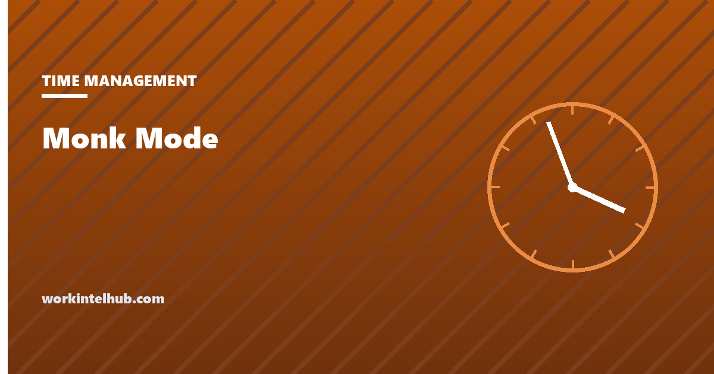

Monk Mode

Monk mode is a set period, from a morning to a month, in which a person removes every input that is not the one thing they are trying to do: no phone, no social media, no chat, no meetings, often no news and no alcohol, sometimes no talking. The name is a joke that stuck. It began in online self-improvement circles around 2010, spread through productivity writing, and by 2023 Fast Company was describing it as the "new" trend that promised to repair attention spans. The practice underneath the branding is old and sound: a defined block of single-tasking with the distractions physically removed rather than resisted.
The planner below sets up a block or a run of blocks with the rules written down and a timer, which is most of what the method is. The rest of the page covers where the idea came from, what the research says it addresses, how to run it in a job with colleagues who expect replies, and the version that fails.
Monk mode session planner
Hold Ctrl or Cmd to select more than one.
Nothing typed here leaves your browser. The timer runs in this tab; if you leave it, that is the data.
Where it came from and what it means
The phrase is usually traced to the programmer Ben Orenstein, who used it around 2010 for stretches of undistracted work, and to the online self-improvement communities that turned it into a lifestyle programme: a period of weeks or months of "introspection, isolation and improvement", with rules covering exercise, diet, socialising and screens as well as work. That version is a retreat, and it is not what most people who search the phrase can do on a Tuesday.
The working definition used on this page is narrower. Monk mode is a block of time, decided in advance, in which one task is done and every other input is removed at the source: the phone in another room rather than face down, chat closed rather than muted, the browser limited to the task rather than trusted. It differs from ordinary focus in that the distractions are made unavailable, not merely ignored, and from a Pomodoro in that the blocks are longer, usually 90 minutes to half a day, and are repeated on consecutive days for a defined project.
The monastic comparison is more accurate than the branding suggests. The rules of the Benedictine day are about removing choice, not adding willpower: the hours are fixed, the tasks assigned, the silence structural. Monk mode works for the same reason. It moves the decision to resist from the moment of temptation, when it is weakest, to the planning session, when it is strongest.
What it fixes, according to the research
The attention research is unambiguous about the problem. Gloria Mark of the University of California, Irvine, has measured office workers' screen attention since 2004: the average span on any one screen fell from about two and a half minutes in 2004 to 75 seconds in 2012 and 47 seconds in the most recent studies, with a median of 40. Her work also measured the cost of returning: after a switch, people take on average around 25 minutes to get back to the original task, often via two or three other tasks first. The Microsoft Work Trend Index adds that knowledge workers are interrupted every two minutes during the working day, receiving 117 emails and 153 chat messages on average.
Two features of monk mode map directly onto those findings. Removing inputs at the source stops the switches, and the 25-minute recovery cost does not have to be paid. Longer blocks matter because the deep engagement with a difficult task, what Csikszentmihalyi called flow and Cal Newport called deep work, takes time to reach and is lost at the first interruption; a 25-minute block rarely gets there, a 90-minute one often does.
What the research does not support is the lifestyle version's claim that a month of isolation rewires attention permanently. Attention spans on screen have been falling across the population for twenty years because the environment changed, and they will not stay repaired when the environment returns. Monk mode is a tool for producing specific work, and its benefit is that work, not a transformed brain.
Running it in a job
- Pick one project and define done. A first draft sent, a module shipped, a plan approved. Monk mode for "being more focused" has no end and fails.
- Pick the block and the run. Ninety minutes to half a day, at the same time each day, for three to ten consecutive days. Mornings work for most people because nothing has gone wrong yet.
- Tell people. Colleagues, manager, family. When you are back, who covers, how to reach you if the building is on fire. The focus blocks guide covers the conversation with a manager who books over them.
- Remove, do not resist. Phone in a drawer in another room. Chat and mail closed, not minimised. Browser limited to the task with the rest blocked. Status set with a return time. Each of these is a decision made once instead of two hundred times.
- Lay out the start. The night before: the file open, the last note read, the first five minutes decided. The block begins with work, not with deciding what the work is.
- Keep a parking list. Every thought about anything else goes on paper and stays there until the block ends. The list is emptied into the weekly planner afterwards.
- Do not renegotiate inside the block. The block ends when the timer ends. Ending early because "it is going badly" is the pattern that kills the practice.
- Two minutes after. What got done, what broke in, what tomorrow's first five minutes are. This is where the next block is planned.
The version that fails
- The lifestyle overhaul. Cold showers, no sugar, no friends, 5 a.m. and a new job title for the self. It ends within a fortnight and the work it was for is untouched. Change one thing: the inputs during the block.
- Announcing it and not doing it. Monk mode is a status message on some teams. The test is whether the phone is in another room.
- Using it for shallow work. Three hours of protected time spent on email is three hours of email. The block is for the one task that needs it.
- Going dark on a team that depends on you. A manager who disappears for a week has not done monk mode; they have done a bad handover. Cover has to be real.
- Doing it every day forever. A run of blocks for a project, then back to the ordinary week with its ordinary focus blocks. Permanent monk mode is a different job.
- Measuring the streak instead of the output. Fourteen days completed is not the goal. The draft is.
For the daily, sustainable version of the same idea, the time blocking guide fits protected work into an ordinary calendar, and eat the frog covers the choice of which task earns the morning.
Key takeaways
- Monk mode is a defined block of single-tasking with distractions removed at the source, not resisted: phone in another room, chat closed, browser limited.
- The name came from online self-improvement circles around 2010; the practice is much older and works by moving the decision to resist into the planning session.
- Screen attention now averages 47 seconds, recovery from a switch takes around 25 minutes and interruptions arrive every two minutes; monk mode stops the switches.
- Run it for one project with a defined 'done', in 90-minute to half-day blocks at the same time on three to ten consecutive days, with cover arranged.
- Lay out the start the night before, keep a parking list, and never renegotiate the block from inside it.
- It fails as a lifestyle overhaul, as a status message, or when used for shallow work. The output is the point, not the streak.
Frequently asked questions
What is monk mode?
A defined period, from a morning to several weeks, in which a person works on one thing and removes every other input at the source: phone out of reach, chat and email closed, browser limited, meetings declined, often social media and news cut entirely. The distinctive feature is removal rather than resistance.
Where did monk mode come from?
The phrase is usually credited to the programmer Ben Orenstein around 2010 and was taken up by online self-improvement communities as a programme of 'introspection, isolation and improvement'. It spread through productivity writing and social media, and by 2023 mainstream business press was covering it as a trend. The underlying practice of scheduled, protected single-tasking is much older.
How long should monk mode last?
For work purposes, blocks of 90 minutes to half a day, repeated at the same time on three to ten consecutive days for a specific project. Shorter blocks rarely reach deep engagement with a hard task; longer runs without an end drift into a lifestyle programme that most people abandon within a fortnight.
Does monk mode actually work?
The evidence supports the mechanism. Attention research shows switches are frequent (every two minutes in recent workplace data) and expensive (about 25 minutes to return to the original task), and removing inputs prevents both. It does not support claims that a period of isolation permanently rewires attention; the benefit is the work produced during the blocks.
What is the difference between monk mode and deep work?
Deep work, Cal Newport's term, describes the kind of concentrated cognitive effort that produces valuable results. Monk mode is one way of scheduling it: a bounded run of blocks with distractions removed. Newport himself describes a 'monastic' scheduling philosophy as the most extreme of several.
Can you do monk mode with a full-time job?
Yes, as blocks rather than a retreat. Ninety minutes each morning for a week, announced to colleagues with cover arranged and a return time posted, is monk mode. Disappearing for a week without a handover is not; it is a missed week.